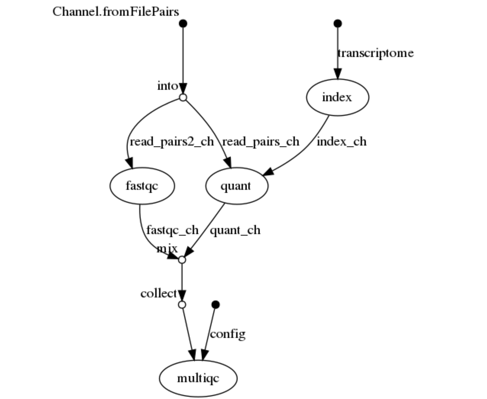
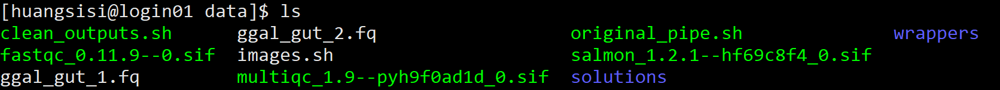

Containerising a Pipeline
参考 https://pawseysc.github.io/containers-bioinformatics-workshop/3.pipeline/index.html
1 | $ cd /data |
目标：port a small RNA sequencing pipeline （如图） to containers

- 使用的三个工具
salmon：从 RNA-seq 数据快速定量转录，salmon quantfastqc：高通量测序数据质控multiqc：将多个样本的分析结果合并为一个报告
技能
search for container images on web registries
download images with
singularity pull <IMAGE>execute commands in containers through
singularity exec <IMAGE> <CMD> <ARGS>bind mount additional host containers using either
- execution flag
-B/--bind
1
$ singularity shell -B /opt,/data:/mnt /tmp/Centos7-ompi.img
- environment variable
SINGULARITY_BINDPATH
1
2$ export SINGULARITY_BINDPATH="/opt,/data:/mnt"
$ singularity shell /tmp/Centos7-ompi.imgBind
/opton the host to/optin the container and/dataon the host to/mntin the container.- execution flag
pipeline
目录
1 | [huangsisi@login01 pipeline]$ tree |
关键步骤
- step 1: salmon index
1 | salmon index -t ggal_1_48850000_49020000.Ggal71.500bpflank.fa -i out_index &>log_index |
- step 2: salmon quant
1 | salmon quant --libType=U -i ../reference/out_index -1 ggal_gut_1.fq -2 ggal_gut_2.fq -o ggal_gut &>log_quant |
- step 3: fastqc quality control
1 | fastqc -o out_fastqc -f fastq -q ggal_gut_1.fq ggal_gut_2.fq &>log_fq |
- step 4: multiqc multiple quality control（学习一下运用软链接这波操作）
1 | mkdir out_multiqc |
Packages
- salmon 1.2.1
- fastqc 0.11.9
- multiqc 1.9
Find and pull Packages
- 以
salmon为例，Find a container image for Salmon 使用 web registry Quay, at https://quay.io. We could have gone directly at the BioContainers home page, https://biocontainers.pro, however its user interface is a bit less friendly right now.- 右上角 Search
salmon，回车 - 结果列表中找到
biocontainers/salcom点击 - 点击左侧 Tags，找到最近的版本 1.2.1，为
1.2.1--hf69c8f4_0 - 点击右侧 Fetch，选择 Pull by Tag，复制
quay.io/biocontainers/salmon:1.2.1--hf69c8f4_0
- 右上角 Search
- Pull the container image for Salmon
1 | $ singularity pull docker://quay.io/biocontainers/salmon:1.2.1--hf69c8f4_0 |
- Find and pull images for FastQC and MultiQC
1 | $ singularity pull docker://quay.io/biocontainers/fastqc:0.11.9--0 |
- Current directory, 3 images, with inputs and scripts for the pipeline

- 测试下载镜像
1 | singularity exec ./multiqc_1.9--pyh9f0ad1d_0.sif multiqc --help |
Containerise the pipeline
first pass
对以上关键步骤的四行命令用singularity exec进行改动，注意一下mount bind可能需要绝对路径
- step 1: salmon index
the current directory reference/ is mounted by default in the container
1 | singularity exec \ |
- step 2: salmon quant
bind mount other directory ../reference
1 | singularity exec \ |
- step 3: fastqc quality control
1 | singularity exec \ |
- step 4: multiqc multiple quality control
1 | mkdir out_multiqc |
备份，做修改然后运行
1 | $ cp original_pipe.sh pipe.1.sh |
second pass
1 | $ ./clean_outputs.sh |
- Container image paths
在 #!/bin/bash 之后，为每一个容器镜像定义变量，使用绝对路径
1 | WORK=/share/home/jianglab/huangsisi/usr/singularity/data/containers-bioinformatics-workshop |
- Bind mounted directories
使用变量SINGULARITY_BIN
1 | export SINGULARITY_BINDPATH="$WORK/exercises/pipeline" |
脚本框架
1 |
|
测试
1 | $ ./pipe.2.sh |
Streamlining the user experience of containers
注意到命令具有相似的形式
1 | singularity exec $image <COMMAND> <ARGUMENTS> |
于是可以把打包成如下
1 |
|
args值为$@ ，bash语法，代表了正在调用的脚本参数，在脚本后加上的任何参数都将传递给args。
将以上三个软件命令都打包到wrappers文件夹，然后
- bind mount paths with
SINGULARITY_BINDPATH - include
wrappersdirectory in the value of bash variablePATH
1 | PATH="$WORK/exercises/pipeline/data/wrappers:$PATH" |
每个脚本记得定义WORK变量（？）
总，运行：）
1 |
|
1 | $ cat wrappers/salmon |